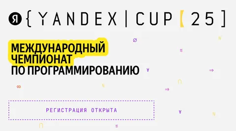

Никогда не умел и не понимал его. Наверное, потому что недостаточно быстро думаю. А еще потому что мне всегда было интересней созидать что-то живое, что будет работать и после "сдачи" кода. Представьте, что вы участвуете в конкурсе шеф-поваров, но вашу еду никто не ест. Приготовили, победили, выкинули. Кощунство да и только. К тому же, я не люблю спешить.
К самим олимпиадным программистам у меня отношение двоякое. С одной стороны, чистый олимпиадник без коммерческого опыта в реальном энтерпрайзе будет делать странные вещи. Например, не стоит в репозитории кода, который еще команде поддерживать, использовать однобуквенные переменные и нечитаемые конструкции. Часто олимпиадный код - write only, а на работе долгосрочная поддерживаемость кода важнее его оптимальности.
Как оценивать этих ребят при найме тоже не очень понятно - вроде по секциям с кодом кандидат не ниже сениора, а коммерческого опыта нет. Хорошо, что в новом цикле собеседований есть секции про опыт для сеньорных кандидатов. Но об этом расскажу отдельно.
С другой стороны, если человек крут в олимпиадном программировании, значит котелок у него варит очень даже хорошо. Быстрый и острый ум всегда полезен. И в сочетании с некоторым энтерпрайз-опытом и грамотным наставничеством дает очень быстрый профессиональный рост. У меня лет 6-7 назад была команда, состоящяя сплошь из олимпиадников. И я вам скажу, что это была потрясающая команда. Ребята были очень интровертные и не очень самостоятельные, но как инженеры - мое почтение. Разрабатывать сложную систему с нетривиальными нефункциональными требованиями они могли почти с закрытыми глазами.
Так что олимпиадный опыт однозначно ценен и полезен. Просто не надо считать, что если ты крутой олимпиадник - значит ты уже сеньор. Это мощнейшая база для быстрого роста, но еще нужен опыт разработки реальных штук в индустрии, набитые шишки, насмотренность в технологиях, опыт работы в команде, опыт создания и развития долгоиграющего продукта. Но это все - наживное.
Кстати, до 29 октября открыта регистрация на международный чемпионат по программированию Yandex Cup. Финал впервые пройдёт в Стамбуле — 5–7 декабря, соберёт 180 лучших участников. Два международных трека: к традиционным алгоритмам добавилось машинное обучение. Доступно 6 направлений: аналитика, фронтенд, бэкенд, мобильная разработка, ML и спортивное программирование («Алгоритм»). Лучшие участники смогут пройти собеседование в Яндексе по упрощённой схеме. Подробности тут - https://yandex.ru/cup/. Если вы любите и умеете в олимпиадное программирование, или просто любопытно поучаствовать - пропускать нельзя.
